Ortholog Divergence Report
Input: GPR82.valid.longest.fa · N sequences: 422 · Aligned length: 869 codons
Reference: Apodemus_sylvaticus
Quick risk overview
- LOW: 0
- INTERMEDIATE: 0
- HIGH: 88831


Composition & complexity per sequence
Saved as per_sequence_composition.csv. High low-complexity or repeat content can reduce BLAST sensitivity due to soft masking.
| id | GC | GC skew | CpG dens. | AA LCR frac | NT repeat frac | AA len | CDS len |
|---|---|---|---|---|---|---|---|
| Apodemus_sylvaticus | 0.3811 | -0.05067 | 0.00916 | 0.07317 | 0.73171 | 328 | 984 |
| Canis_lupus_familiaris | 0.38294 | -0.10881 | 0.0149 | 0.0506 | 0.76687 | 336 | 1008 |
| Symphalangus_syndactylus | 0.3631 | -0.11475 | 0.00695 | 0.03571 | 0.74603 | 336 | 1008 |
| Budorcas_taxicolor | 0.37897 | -0.1466 | 0.00993 | 0.05655 | 0.75794 | 336 | 1008 |
| Equus_asinus | 0.3879 | -0.09974 | 0.01291 | 0.03571 | 0.75794 | 336 | 1008 |
| Motacilla_alba_alba | 0.46746 | -0.1519 | 0.02863 | 0.0355 | 0.71992 | 338 | 1014 |
| Ursus_arctos | 0.39484 | -0.09548 | 0.02185 | 0.0506 | 0.72123 | 336 | 1008 |
| Pygoscelis_adeliae | 0.37403 | -0.07254 | 0.01746 | 0.0 | 0.73159 | 344 | 1032 |
| Lagenorhynchus_obliquidens | 0.37996 | -0.12272 | 0.00894 | 0.0506 | 0.75198 | 336 | 1008 |
| Fukomys_damarensis | 0.38095 | -0.09896 | 0.00794 | 0.08631 | 0.72917 | 336 | 1008 |
| Lepus_europaeus | 0.37897 | -0.07853 | 0.01192 | 0.03571 | 0.7252 | 336 | 1008 |
| Vulpes_vulpes | 0.37897 | -0.10995 | 0.0139 | 0.0506 | 0.77083 | 336 | 1008 |
| Myiozetetes_cayanensis | 0.43708 | -0.07253 | 0.02404 | 0.0 | 0.71182 | 347 | 1041 |
| Octodon_degus | 0.37798 | -0.09186 | 0.00497 | 0.09821 | 0.69048 | 336 | 1008 |
| Manacus_candei | 0.41691 | -0.09677 | 0.01731 | 0.0 | 0.68972 | 347 | 1041 |
| Theropithecus_gelada | 0.36409 | -0.12262 | 0.00993 | 0.03571 | 0.74306 | 336 | 1008 |
| Castor_canadensis | 0.37525 | -0.1383 | 0.01099 | 0.03593 | 0.70958 | 334 | 1002 |
| Columba_livia | 0.36119 | -0.0854 | 0.01096 | 0.0 | 0.72736 | 335 | 1005 |
| Merops_nubicus | 0.36152 | -0.05376 | 0.00973 | 0.04373 | 0.73761 | 343 | 1029 |
| Propithecus_coquereli | 0.37599 | -0.08707 | 0.01192 | 0.03571 | 0.7381 | 336 | 1008 |
| Corvus_kubaryi | 0.44669 | -0.15269 | 0.025 | 0.0 | 0.74544 | 347 | 1041 |
| Xyrauchen_texanus | 0.42766 | -0.01927 | 0.01558 | 0.04396 | 0.75458 | 364 | 1092 |
| Bufo_gargarizans | 0.44381 | -0.07725 | 0.03051 | 0.08286 | 0.68476 | 350 | 1050 |
| Pogoniulus_pusillus | 0.3876 | -0.055 | 0.00679 | 0.0 | 0.73934 | 344 | 1032 |
| Ovis_aries | 0.37897 | -0.13613 | 0.01092 | 0.05655 | 0.75992 | 336 | 1008 |
| Delphinapterus_leucas | 0.38393 | -0.12661 | 0.01092 | 0.0506 | 0.75198 | 336 | 1008 |
| Pezoporus_wallicus | 0.3617 | -0.07003 | 0.0071 | 0.03647 | 0.71023 | 329 | 987 |
| Dasypus_novemcinctus | 0.3621 | -0.06849 | 0.01092 | 0.0 | 0.72123 | 336 | 1008 |
| Ammospiza_nelsoni | 0.46435 | -0.12448 | 0.02411 | 0.03757 | 0.71484 | 346 | 1038 |
| Neophocaena_asiaeorientalis_asiaeorientalis | 0.38492 | -0.12887 | 0.01192 | 0.0506 | 0.75794 | 336 | 1008 |
| Myotis_brandtii | 0.49507 | -0.13546 | 0.04541 | 0.0503 | 0.67061 | 338 | 1014 |
| Trichechus_manatus_latirostris | 0.3631 | -0.0929 | 0.00497 | 0.0 | 0.73313 | 336 | 1008 |
| Caloenas_nicobarica | 0.35645 | -0.07568 | 0.01061 | 0.0 | 0.74085 | 346 | 1038 |
| Grammomys_surdaster | 0.39024 | -0.0625 | 0.01119 | 0.11585 | 0.77134 | 328 | 984 |
| Neogale_vison | 0.3879 | -0.09974 | 0.0149 | 0.0 | 0.72817 | 336 | 1008 |
| Pterocles_gutturalis | 0.3694 | -0.10818 | 0.00878 | 0.03509 | 0.74464 | 342 | 1026 |
| Ursus_maritimus | 0.39484 | -0.09548 | 0.02085 | 0.0506 | 0.72718 | 336 | 1008 |
| Eptesicus_fuscus | 0.46154 | -0.10684 | 0.03653 | 0.0503 | 0.70118 | 338 | 1014 |
| Marmota_marmota_marmota | 0.38591 | -0.06941 | 0.01192 | 0.0506 | 0.72421 | 336 | 1008 |
| Melanerpes_formicivorus | 0.38469 | -0.07305 | 0.00873 | 0.0 | 0.75291 | 344 | 1032 |
| Neomonachus_schauinslandi | 0.38095 | -0.10417 | 0.01688 | 0.0506 | 0.74206 | 336 | 1008 |
| Erinaceus_europaeus | 0.3801 | -0.04188 | 0.01394 | 0.10448 | 0.74726 | 335 | 1005 |
| Fulmarus_glacialis | 0.37016 | -0.10471 | 0.01261 | 0.0 | 0.73934 | 344 | 1032 |
| Alligator_mississippiensis | 0.34686 | -0.10306 | 0.00387 | 0.03478 | 0.76329 | 345 | 1035 |
| Lipotes_vexillifer | 0.37897 | -0.12042 | 0.00993 | 0.0 | 0.75198 | 336 | 1008 |
| Arvicanthis_niloticus | 0.38923 | -0.08094 | 0.00916 | 0.07927 | 0.75102 | 328 | 984 |
| Antrostomus_carolinensis | 0.37597 | -0.09278 | 0.01455 | 0.0 | 0.74806 | 344 | 1032 |
| Equus_przewalskii | 0.38889 | -0.10204 | 0.01291 | 0.03571 | 0.75794 | 336 | 1008 |
| Lagopus_leucura | 0.3843 | -0.10345 | 0.01939 | 0.06116 | 0.7472 | 327 | 981 |
| Elephantulus_edwardii | 0.42213 | -0.15192 | 0.01481 | 0.10782 | 0.69063 | 473 | 1419 |
| Pezoporus_occidentalis | 0.36069 | -0.05618 | 0.00507 | 0.03647 | 0.71631 | 329 | 987 |
| Falco_rusticolus | 0.37016 | -0.09424 | 0.01261 | 0.0436 | 0.72287 | 344 | 1032 |
| Corvus_cornix_cornix | 0.44765 | -0.1588 | 0.02404 | 0.0 | 0.74544 | 347 | 1041 |
| Prionailurus_bengalensis | 0.39385 | -0.10327 | 0.01887 | 0.0506 | 0.7123 | 336 | 1008 |
| Onychostruthus_taczanowskii | 0.47394 | -0.12448 | 0.03248 | 0.0 | 0.72665 | 339 | 1017 |
| Delphinus_delphis | 0.37996 | -0.11227 | 0.00993 | 0.0506 | 0.75595 | 336 | 1008 |
| Orycteropus_afer_afer | 0.36607 | -0.06233 | 0.00794 | 0.03571 | 0.74504 | 336 | 1008 |
| Bos_taurus | 0.38194 | -0.14286 | 0.01092 | 0.05655 | 0.76786 | 336 | 1008 |
| Acinonyx_jubatus | 0.39286 | -0.10606 | 0.01986 | 0.0506 | 0.71726 | 336 | 1008 |
| Oncorhynchus_keta | 0.55923 | 0.22167 | 0.02759 | 0.21074 | 0.76309 | 242 | 726 |
| Moschus_berezovskii | 0.38393 | -0.15245 | 0.00993 | 0.0625 | 0.76587 | 336 | 1008 |
| Cariama_cristata | 0.37016 | -0.12565 | 0.0097 | 0.0 | 0.75484 | 344 | 1032 |
| Panthera_uncia | 0.39286 | -0.10606 | 0.01986 | 0.0506 | 0.71429 | 336 | 1008 |
| Pipra_filicauda | 0.41018 | -0.0726 | 0.01731 | 0.0 | 0.70317 | 347 | 1041 |
| Salmo_trutta | 0.53976 | 0.11599 | 0.02286 | 0.11929 | 0.76058 | 394 | 1182 |
| Xenopus_tropicalis | 0.35191 | -0.06667 | 0.01272 | 0.03812 | 0.69208 | 341 | 1023 |
| Dama_dama | 0.37798 | -0.13911 | 0.00794 | 0.05655 | 0.75992 | 336 | 1008 |
| Phyllostomus_hastatus | 0.36832 | -0.06596 | 0.00778 | 0.03499 | 0.69193 | 343 | 1029 |
| Lagopus_muta | 0.38634 | -0.1029 | 0.02143 | 0.06116 | 0.737 | 327 | 981 |
| Molossus_molossus | 0.375 | -0.10582 | 0.00894 | 0.0 | 0.73115 | 336 | 1008 |
| Gallus_gallus | 0.37209 | -0.11458 | 0.01843 | 0.09302 | 0.71802 | 344 | 1032 |
| Tyto_alba | 0.3595 | -0.10512 | 0.00873 | 0.0 | 0.74806 | 344 | 1032 |
| Hirundo_rustica | 0.49087 | -0.13112 | 0.04231 | 0.0 | 0.74063 | 347 | 1041 |
| Cervus_elaphus | 0.37883 | -0.13838 | 0.00792 | 0.05638 | 0.7636 | 337 | 1011 |
| Trachemys_scripta_elegans | 0.34866 | -0.09341 | 0.00959 | 0.0 | 0.75192 | 348 | 1044 |
| Suncus_etruscus | 0.37875 | -0.06475 | 0.00909 | 0.0654 | 0.71571 | 367 | 1101 |
| Sus_scrofa | 0.38294 | -0.12435 | 0.0149 | 0.03571 | 0.74504 | 336 | 1008 |
| Corapipo_altera | 0.4025 | -0.08353 | 0.01154 | 0.0 | 0.68396 | 347 | 1041 |
| Struthio_camelus | 0.36535 | -0.1134 | 0.01225 | 0.0 | 0.73258 | 354 | 1062 |
| Pongo_abelii | 0.3631 | -0.12568 | 0.00794 | 0.03571 | 0.74008 | 336 | 1008 |
| Perognathus_longimembris_pacificus | 0.36706 | -0.10811 | 0.00695 | 0.07143 | 0.72024 | 336 | 1008 |
| Odocoileus_virginianus | 0.37798 | -0.14436 | 0.00894 | 0.05655 | 0.76389 | 336 | 1008 |
| Pelecanus_crispus | 0.36047 | -0.06452 | 0.00776 | 0.0 | 0.73159 | 344 | 1032 |
| Pygocentrus_nattereri | 0.48086 | 0.02524 | 0.01308 | 0.0 | 0.71615 | 357 | 1071 |
| Pseudopipra_pipra | 0.4121 | -0.07692 | 0.01635 | 0.0 | 0.71566 | 347 | 1041 |
| Trichomycterus_rosablanca | 0.46667 | -0.02041 | 0.0135 | 0.04286 | 0.71746 | 420 | 1260 |
| Chanodichthys_erythropterus | 0.44261 | -0.07884 | 0.01562 | 0.03857 | 0.70248 | 363 | 1089 |
| Tachysurus_vachellii | 0.4347 | 0.0 | 0.01371 | 0.03836 | 0.7032 | 365 | 1095 |
| Lepisosteus_oculatus | 0.60873 | -0.10395 | 0.06155 | 0.06417 | 0.71569 | 374 | 1122 |
| Mustela_lutreola | 0.3869 | -0.10256 | 0.01787 | 0.0 | 0.73611 | 336 | 1008 |
| Monodelphis_domestica | 0.35568 | -0.02094 | 0.0028 | 0.06704 | 0.67132 | 358 | 1074 |
| Phocoena_phocoena | 0.38591 | -0.13111 | 0.0139 | 0.0506 | 0.75992 | 336 | 1008 |
| Chroicocephalus_ridibundus | 0.36047 | -0.06989 | 0.01164 | 0.0 | 0.72965 | 344 | 1032 |
| Rhinolophus_ferrumequinum | 0.37103 | -0.1016 | 0.01291 | 0.0506 | 0.71627 | 336 | 1008 |
| Phocoena_sinus | 0.38393 | -0.12661 | 0.01192 | 0.0506 | 0.75794 | 336 | 1008 |
| Macaca_mulatta | 0.36409 | -0.12262 | 0.00993 | 0.03571 | 0.74306 | 336 | 1008 |
| Camelus_dromedarius | 0.38889 | -0.10204 | 0.0139 | 0.0 | 0.71925 | 336 | 1008 |
| Physeter_macrocephalus | 0.375 | -0.12698 | 0.00894 | 0.0506 | 0.75198 | 336 | 1008 |
| Enhydra_lutris_kenyoni | 0.38591 | -0.10026 | 0.01589 | 0.0 | 0.72718 | 336 | 1008 |
| Colius_striatus | 0.35174 | -0.07989 | 0.00582 | 0.0 | 0.74516 | 344 | 1032 |
| Anas_platyrhynchos | 0.35474 | -0.04023 | 0.0102 | 0.0 | 0.72681 | 327 | 981 |
| Lutra_lutra | 0.38591 | -0.1054 | 0.01589 | 0.0 | 0.72619 | 336 | 1008 |
| Aquila_chrysaetos_chrysaetos | 0.3595 | -0.07817 | 0.00873 | 0.0 | 0.74322 | 344 | 1032 |
| Cygnus_olor | 0.35168 | -0.07826 | 0.00714 | 0.0 | 0.69929 | 327 | 981 |
| Equus_quagga | 0.38988 | -0.10433 | 0.01291 | 0.03571 | 0.75794 | 336 | 1008 |
| Manis_javanica | 0.3791 | -0.09186 | 0.01394 | 0.08657 | 0.71841 | 335 | 1005 |
| Loxodonta_africana | 0.37313 | -0.07733 | 0.01394 | 0.04179 | 0.7005 | 335 | 1005 |
| Falco_biarmicus | 0.36822 | -0.08421 | 0.01067 | 0.0436 | 0.72093 | 344 | 1032 |
| Ctenopharyngodon_idella | 0.44261 | -0.06224 | 0.01562 | 0.03581 | 0.71166 | 363 | 1089 |
| Antechinus_flavipes | 0.34421 | -0.05747 | 0.00297 | 0.03561 | 0.68843 | 337 | 1011 |
| Crocodylus_porosus | 0.35072 | -0.11295 | 0.0029 | 0.0 | 0.76908 | 345 | 1035 |
| Pseudorca_crassidens | 0.37996 | -0.10705 | 0.01092 | 0.0506 | 0.75397 | 336 | 1008 |
| Leopardus_geoffroyi | 0.39087 | -0.09645 | 0.01688 | 0.0506 | 0.72817 | 336 | 1008 |
| Emys_orbicularis | 0.34674 | -0.08287 | 0.00767 | 0.0 | 0.73084 | 348 | 1044 |
| Protopterus_annectens | 0.368 | -0.05797 | 0.00979 | 0.04267 | 0.65422 | 375 | 1125 |
| Talpa_occidentalis | 0.35323 | -0.08169 | 0.00598 | 0.03582 | 0.67463 | 335 | 1005 |
| Sinocyclocheilus_grahami | 0.45446 | -0.07816 | 0.0155 | 0.03279 | 0.75592 | 366 | 1098 |
| Carassius_carassius | 0.44292 | -0.05155 | 0.01371 | 0.03288 | 0.74977 | 365 | 1095 |
| Rousettus_aegyptiacus | 0.36245 | -0.10803 | 0.00804 | 0.0 | 0.71586 | 332 | 996 |
| Tauraco_erythrolophus | 0.36628 | -0.14815 | 0.01358 | 0.0 | 0.72578 | 344 | 1032 |
| Mesoplodon_densirostris | 0.38294 | -0.11917 | 0.01092 | 0.03571 | 0.75992 | 336 | 1008 |
| Esox_lucius | 0.52968 | -0.05517 | 0.02468 | 0.18356 | 0.73881 | 365 | 1095 |
| Dermochelys_coriacea | 0.34203 | -0.08475 | 0.0029 | 0.0 | 0.74396 | 345 | 1035 |
| Acomys_russatus | 0.3865 | -0.01587 | 0.01126 | 0.07975 | 0.72188 | 326 | 978 |
| Emydura_macquarii_macquarii | 0.3447 | -0.07692 | 0.00569 | 0.0 | 0.7178 | 352 | 1056 |
| Pipistrellus_kuhlii | 0.46204 | -0.1022 | 0.02595 | 0.03333 | 0.73981 | 360 | 1080 |
| Tupaia_chinensis | 0.38194 | -0.10649 | 0.0149 | 0.0506 | 0.6994 | 336 | 1008 |
| Carlito_syrichta | 0.37103 | -0.1016 | 0.00695 | 0.08631 | 0.73115 | 336 | 1008 |
| Phodopus_roborovskii | 0.3792 | -0.06452 | 0.00918 | 0.0367 | 0.7421 | 327 | 981 |
| Capra_hircus | 0.37897 | -0.13613 | 0.00894 | 0.05655 | 0.76389 | 336 | 1008 |
| Eubalaena_glacialis | 0.37897 | -0.11518 | 0.00894 | 0.0506 | 0.75 | 336 | 1008 |
| Poecile_atricapillus | 0.48511 | -0.12475 | 0.03462 | 0.03746 | 0.71854 | 347 | 1041 |
| Microtus_ochrogaster | 0.3894 | -0.05759 | 0.00816 | 0.07951 | 0.76045 | 327 | 981 |
| Chelonia_mydas | 0.34308 | -0.07386 | 0.00683 | 0.0 | 0.7193 | 342 | 1026 |
| Zalophus_californianus | 0.37996 | -0.09138 | 0.0149 | 0.0506 | 0.73214 | 336 | 1008 |
| Dromaius_novaehollandiae | 0.35768 | -0.09424 | 0.01125 | 0.0 | 0.73221 | 356 | 1068 |
| Colossoma_macropomum | 0.49108 | 0.00574 | 0.02068 | 0.0 | 0.75305 | 355 | 1065 |
| Cinclus_cinclus | 0.48415 | -0.09921 | 0.03942 | 0.0 | 0.69356 | 347 | 1041 |
| Bufo_bufo | 0.44952 | -0.08898 | 0.03337 | 0.08286 | 0.66762 | 350 | 1050 |
| Lynx_rufus | 0.39286 | -0.10101 | 0.01986 | 0.0506 | 0.7123 | 336 | 1008 |
| Mus_caroli | 0.38923 | -0.05483 | 0.01322 | 0.07317 | 0.73679 | 328 | 984 |
| Misgurnus_anguillicaudatus | 0.43663 | -0.00596 | 0.02606 | 0.0 | 0.72569 | 384 | 1152 |
| Pan_paniscus | 0.36409 | -0.12807 | 0.00794 | 0.03571 | 0.73909 | 336 | 1008 |
| Polyodon_spathula | 0.43801 | -0.12297 | 0.01933 | 0.06098 | 0.72154 | 328 | 984 |
| Melopsittacus_undulatus | 0.36522 | -0.06349 | 0.01064 | 0.06667 | 0.70242 | 345 | 1035 |
| Prinia_subflava | 0.48031 | -0.136 | 0.02404 | 0.0 | 0.6878 | 347 | 1041 |
| Danio_aesculapii | 0.44875 | -0.06173 | 0.01756 | 0.0 | 0.75162 | 361 | 1083 |
| Pteronotus_mesoamericanus | 0.36706 | -0.08108 | 0.00894 | 0.03571 | 0.71627 | 336 | 1008 |
| Myodes_glareolus | 0.3843 | -0.06101 | 0.00714 | 0.07951 | 0.75229 | 327 | 981 |
| Zonotrichia_leucophrys_gambelii | 0.45515 | -0.12863 | 0.02079 | 0.03683 | 0.72616 | 353 | 1059 |
| Choloepus_didactylus | 0.37897 | -0.09948 | 0.00894 | 0.03571 | 0.70337 | 336 | 1008 |
| Marmota_monax | 0.3869 | -0.06667 | 0.01291 | 0.0506 | 0.72421 | 336 | 1008 |
| Gopherus_evgoodei | 0.34483 | -0.08333 | 0.00767 | 0.0 | 0.69636 | 348 | 1044 |
| Tursiops_truncatus | 0.37798 | -0.11286 | 0.00894 | 0.0506 | 0.75397 | 336 | 1008 |
| Cercocebus_atys | 0.36508 | -0.125 | 0.00993 | 0.03571 | 0.73909 | 336 | 1008 |
| Manis_pentadactyla | 0.3801 | -0.10995 | 0.01195 | 0.08657 | 0.7194 | 335 | 1005 |
| Lathamus_discolor | 0.36812 | -0.08136 | 0.01064 | 0.05507 | 0.70242 | 345 | 1035 |
| Bos_indicus_x_Bos_taurus | 0.38194 | -0.14286 | 0.01092 | 0.05655 | 0.76786 | 336 | 1008 |
| Heterocephalus_glaber | 0.37897 | -0.09948 | 0.01092 | 0.08631 | 0.73016 | 336 | 1008 |
| Eleutherodactylus_coqui | 0.41712 | -0.0524 | 0.03099 | 0.0847 | 0.76412 | 366 | 1098 |
| Cyanistes_caeruleus | 0.48127 | -0.12974 | 0.03558 | 0.03746 | 0.71278 | 347 | 1041 |
| Salmo_salar | 0.54101 | 0.10968 | 0.02707 | 0.08377 | 0.75218 | 382 | 1146 |
| Vicugna_pacos | 0.38855 | -0.11111 | 0.01508 | 0.03916 | 0.71185 | 332 | 996 |
| Trichosurus_vulpecula | 0.35542 | -0.02825 | 0.00402 | 0.07229 | 0.67169 | 332 | 996 |
| Parus_major | 0.48223 | -0.11952 | 0.03558 | 0.03746 | 0.69837 | 347 | 1041 |
| Cricetulus_griseus | 0.37717 | -0.05405 | 0.00714 | 0.07951 | 0.73089 | 327 | 981 |
| Peromyscus_eremicus | 0.39024 | -0.04688 | 0.00916 | 0.07927 | 0.75305 | 328 | 984 |
| Accipiter_gentilis | 0.35853 | -0.09189 | 0.00679 | 0.0 | 0.7345 | 344 | 1032 |
| Vombatus_ursinus | 0.36145 | -0.03333 | 0.00603 | 0.03614 | 0.66265 | 332 | 996 |
| Trachypithecus_francoisi | 0.36718 | -0.12291 | 0.00924 | 0.03692 | 0.73538 | 325 | 975 |
| Labeo_rohita | 0.44602 | -0.08705 | 0.01611 | 0.07386 | 0.74053 | 352 | 1056 |
| Suricata_suricatta | 0.38408 | -0.11917 | 0.01295 | 0.05075 | 0.73632 | 335 | 1005 |
| Gavia_stellata | 0.36628 | -0.06349 | 0.01261 | 0.0 | 0.73934 | 344 | 1032 |
| Falco_cherrug | 0.36822 | -0.08421 | 0.01067 | 0.0436 | 0.72093 | 344 | 1032 |
| Balaenoptera_acutorostrata | 0.37798 | -0.11811 | 0.00894 | 0.0506 | 0.75 | 336 | 1008 |
| Bos_mutus | 0.38294 | -0.14508 | 0.01092 | 0.05655 | 0.76786 | 336 | 1008 |
| Dipodomys_spectabilis | 0.37512 | -0.06101 | 0.00996 | 0.03582 | 0.7403 | 335 | 1005 |
| Balaenoptera_musculus | 0.38095 | -0.10938 | 0.01092 | 0.0506 | 0.74802 | 336 | 1008 |
| Astyanax_mexicanus | 0.52007 | 0.03052 | 0.03458 | 0.0 | 0.79458 | 357 | 1071 |
| Rattus_norvegicus | 0.38618 | -0.03158 | 0.01322 | 0.07927 | 0.74898 | 328 | 984 |
| Zonotrichia_albicollis | 0.4542 | -0.12266 | 0.01985 | 0.0 | 0.73182 | 353 | 1059 |
| Triplophysa_rosa | 0.44896 | -0.05835 | 0.02441 | 0.06233 | 0.73171 | 369 | 1107 |
| Echinops_telfairi | 0.3631 | -0.08743 | 0.00695 | 0.07738 | 0.74504 | 336 | 1008 |
| Peromyscus_maniculatus_bairdii | 0.38923 | -0.03394 | 0.00916 | 0.07927 | 0.76423 | 328 | 984 |
| Chelonoidis_abingdonii | 0.34483 | -0.07778 | 0.00767 | 0.0 | 0.70594 | 348 | 1044 |
| Numida_meleagris | 0.36143 | -0.07775 | 0.01455 | 0.06977 | 0.74419 | 344 | 1032 |
| Gavialis_gangeticus | 0.35362 | -0.10383 | 0.00387 | 0.0 | 0.77681 | 345 | 1035 |
| Haemorhous_mexicanus | 0.46489 | -0.14468 | 0.0297 | 0.03561 | 0.72898 | 337 | 1011 |
| Saccopteryx_leptura | 0.37401 | -0.12467 | 0.0149 | 0.03571 | 0.69841 | 336 | 1008 |
| Tympanuchus_pallidicinctus | 0.38746 | -0.08824 | 0.02281 | 0.09117 | 0.73409 | 351 | 1053 |
| Galeopterus_variegatus | 0.36806 | -0.09434 | 0.01192 | 0.08631 | 0.72917 | 336 | 1008 |
| Onychostoma_macrolepis | 0.4349 | -0.07431 | 0.01201 | 0.03324 | 0.71837 | 361 | 1083 |
| Elephas_maximus_indicus | 0.37313 | -0.07733 | 0.01494 | 0.04179 | 0.7005 | 335 | 1005 |
| Mus_pahari | 0.38618 | -0.06316 | 0.01221 | 0.07317 | 0.72663 | 328 | 984 |
| Aotus_nancymaae | 0.36527 | -0.12568 | 0.00699 | 0.03593 | 0.70958 | 334 | 1002 |
| Cebus_imitator | 0.37026 | -0.12129 | 0.00999 | 0.03593 | 0.72854 | 334 | 1002 |
| Pongo_pygmaeus | 0.3631 | -0.12568 | 0.00794 | 0.03571 | 0.74008 | 336 | 1008 |
| Megalobrama_amblycephala | 0.44697 | -0.07203 | 0.01801 | 0.04261 | 0.70265 | 352 | 1056 |
| Ictidomys_tridecemlineatus | 0.38294 | -0.06736 | 0.01291 | 0.0506 | 0.71032 | 336 | 1008 |
| Hipposideros_armiger | 0.36607 | -0.11653 | 0.01192 | 0.0506 | 0.6994 | 336 | 1008 |
| Cervus_canadensis | 0.37883 | -0.13838 | 0.00792 | 0.05638 | 0.7636 | 337 | 1011 |
| Oxyura_jamaicensis | 0.37003 | -0.09642 | 0.01735 | 0.0 | 0.71662 | 327 | 981 |
| Tachyglossus_aculeatus | 0.43426 | -0.05757 | 0.0278 | 0.12222 | 0.71667 | 360 | 1080 |
| Vidua_chalybeata | 0.4707 | -0.11837 | 0.03077 | 0.0 | 0.73391 | 347 | 1041 |
| Cynocephalus_volans | 0.37202 | -0.09867 | 0.01291 | 0.08631 | 0.74107 | 336 | 1008 |
| Mandrillus_leucophaeus | 0.3621 | -0.12877 | 0.00794 | 0.03571 | 0.74306 | 336 | 1008 |
| Electrophorus_electricus | 0.59674 | -0.00482 | 0.06903 | 0.12356 | 0.7433 | 348 | 1044 |
| Agelaius_phoeniceus | 0.45437 | -0.12051 | 0.01827 | 0.03746 | 0.72622 | 347 | 1041 |
| Hyperolius_riggenbachi | 0.36872 | -0.11111 | 0.01212 | 0.10335 | 0.72067 | 358 | 1074 |
| Empidonax_traillii | 0.42995 | -0.05169 | 0.01838 | 0.0 | 0.70531 | 345 | 1035 |
| Triplophysa_dalaica | 0.43898 | -0.04564 | 0.02188 | 0.0 | 0.66758 | 366 | 1098 |
| Meles_meles | 0.39087 | -0.09137 | 0.01787 | 0.0 | 0.74802 | 336 | 1008 |
| Mustela_putorius_furo | 0.38889 | -0.10714 | 0.01787 | 0.0 | 0.74206 | 336 | 1008 |
| Apus_apus | 0.35957 | -0.06486 | 0.01265 | 0.0 | 0.73275 | 343 | 1029 |
| Apaloderma_vittatum | 0.37403 | -0.07772 | 0.01067 | 0.0 | 0.74225 | 344 | 1032 |
| Colobus_angolensis_palliatus | 0.36409 | -0.12807 | 0.00794 | 0.03571 | 0.7371 | 336 | 1008 |
| Macaca_fascicularis | 0.36409 | -0.12262 | 0.00993 | 0.03571 | 0.74306 | 336 | 1008 |
| Pteropus_vampyrus | 0.37226 | -0.11528 | 0.00999 | 0.0 | 0.72056 | 334 | 1002 |
| Peromyscus_californicus_insignis | 0.39126 | -0.05974 | 0.01322 | 0.07927 | 0.77947 | 328 | 984 |
| Patagioenas_fasciata | 0.36716 | -0.08401 | 0.01096 | 0.0 | 0.73433 | 335 | 1005 |
| Miniopterus_natalensis | 0.38988 | -0.09415 | 0.01986 | 0.03571 | 0.7004 | 336 | 1008 |
| Ursus_americanus | 0.39583 | -0.09273 | 0.02085 | 0.0506 | 0.72718 | 336 | 1008 |
| Manacus_vitellinus | 0.41595 | -0.09931 | 0.01635 | 0.0 | 0.69837 | 347 | 1041 |
| Arvicola_amphibius | 0.39551 | -0.07732 | 0.00714 | 0.07951 | 0.74618 | 327 | 981 |
| Pteropus_alecto | 0.37425 | -0.11467 | 0.00999 | 0.0 | 0.72455 | 334 | 1002 |
| Eschrichtius_robustus | 0.37897 | -0.10995 | 0.00894 | 0.0506 | 0.75 | 336 | 1008 |
| Neopelma_chrysocephalum | 0.40634 | -0.07801 | 0.01346 | 0.0 | 0.68972 | 347 | 1041 |
| Camarhynchus_parvulus | 0.45954 | -0.09853 | 0.02025 | 0.03757 | 0.7341 | 346 | 1038 |
| Lepidothrix_coronata | 0.40826 | -0.09176 | 0.01635 | 0.0 | 0.70605 | 347 | 1041 |
| Felis_catus | 0.39385 | -0.10327 | 0.01986 | 0.0506 | 0.7123 | 336 | 1008 |
| Ailuropoda_melanoleuca | 0.38988 | -0.09415 | 0.01986 | 0.0506 | 0.72718 | 336 | 1008 |
| Sinocyclocheilus_anshuiensis | 0.44536 | -0.05979 | 0.01471 | 0.0854 | 0.72452 | 363 | 1089 |
| Chiroxiphia_lanceolata | 0.41018 | -0.07728 | 0.01442 | 0.0 | 0.68108 | 347 | 1041 |
| Passer_domesticus | 0.45177 | -0.12051 | 0.0239 | 0.0 | 0.75454 | 349 | 1047 |
| Desmodus_rotundus | 0.36578 | -0.06989 | 0.00787 | 0.0413 | 0.72173 | 339 | 1017 |
| Muntiacus_reevesi | 0.38393 | -0.14212 | 0.00993 | 0.03571 | 0.75794 | 336 | 1008 |
| Nyctereutes_procyonoides | 0.38194 | -0.10649 | 0.0139 | 0.0506 | 0.76389 | 336 | 1008 |
| Diceros_bicornis_minor | 0.38095 | -0.11458 | 0.01192 | 0.03571 | 0.74008 | 336 | 1008 |
| Corvus_brachyrhynchos | 0.44669 | -0.16129 | 0.02308 | 0.0 | 0.74736 | 347 | 1041 |
| Papio_anubis | 0.36508 | -0.125 | 0.00993 | 0.03571 | 0.74306 | 336 | 1008 |
| Puma_yagouaroundi | 0.39286 | -0.10101 | 0.01986 | 0.0506 | 0.7123 | 336 | 1008 |
| Alligator_sinensis | 0.34686 | -0.10306 | 0.00387 | 0.0 | 0.76522 | 345 | 1035 |
| Melospiza_georgiana | 0.46243 | -0.12083 | 0.02218 | 0.03757 | 0.72254 | 346 | 1038 |
| Psammomys_obesus | 0.38923 | -0.04439 | 0.00814 | 0.03659 | 0.72663 | 328 | 984 |
| Pseudophryne_corroboree | 0.36995 | -0.07614 | 0.00658 | 0.04507 | 0.71362 | 355 | 1065 |
| Meriones_unguiculatus | 0.38313 | -0.04509 | 0.00712 | 0.03659 | 0.75 | 328 | 984 |
| Oenanthe_melanoleuca | 0.47503 | -0.14163 | 0.02347 | 0.0 | 0.72885 | 327 | 981 |
| Otolemur_garnettii | 0.36546 | -0.08242 | 0.00905 | 0.08735 | 0.71586 | 332 | 996 |
| Myotis_daubentonii | 0.50197 | -0.11198 | 0.04541 | 0.0503 | 0.67357 | 338 | 1014 |
| Mus_musculus | 0.39024 | -0.0625 | 0.01221 | 0.07317 | 0.75203 | 328 | 984 |
| Sylvia_atricapilla | 0.46782 | -0.12526 | 0.02981 | 0.0 | 0.69645 | 347 | 1041 |
| Macaca_thibetana_thibetana | 0.3631 | -0.12022 | 0.00993 | 0.03571 | 0.74306 | 336 | 1008 |
| Malaclemys_terrapin_pileata | 0.34866 | -0.08791 | 0.00671 | 0.0 | 0.75862 | 348 | 1044 |
| Artibeus_jamaicensis | 0.36152 | -0.07527 | 0.00584 | 0.03499 | 0.71234 | 343 | 1029 |
| Chrysochloris_asiatica | 0.37103 | -0.09091 | 0.00894 | 0.07738 | 0.75099 | 336 | 1008 |
| Chlorocebus_sabaeus | 0.36409 | -0.11717 | 0.00993 | 0.03571 | 0.73413 | 336 | 1008 |
| Ornithorhynchus_anatinus | 0.42222 | -0.04386 | 0.02688 | 0.12222 | 0.69537 | 360 | 1080 |
| Dendropsophus_ebraccatus | 0.42144 | -0.06466 | 0.02182 | 0.11172 | 0.72934 | 367 | 1101 |
| Aythya_fuligula | 0.36086 | -0.0565 | 0.01327 | 0.0 | 0.69725 | 327 | 981 |
| Athene_cunicularia | 0.36047 | -0.10753 | 0.00776 | 0.0 | 0.74516 | 344 | 1032 |
| Eulemur_rufifrons | 0.38095 | -0.10938 | 0.0149 | 0.0 | 0.71726 | 336 | 1008 |
| Taeniopygia_guttata | 0.47256 | -0.13548 | 0.02848 | 0.0 | 0.7622 | 328 | 984 |
| Nannospalax_galili | 0.37819 | -0.07278 | 0.01122 | 0.0367 | 0.71152 | 327 | 981 |
| Eurypyga_helias | 0.37928 | -0.07732 | 0.0137 | 0.0 | 0.70088 | 341 | 1023 |
| Nomascus_leucogenys | 0.3621 | -0.12329 | 0.00596 | 0.03571 | 0.74008 | 336 | 1008 |
| Dromiciops_gliroides | 0.35728 | -0.06166 | 0.00575 | 0.03736 | 0.68966 | 348 | 1044 |
| Geospiza_fortis | 0.4605 | -0.09205 | 0.02025 | 0.03757 | 0.74181 | 346 | 1038 |
| Kogia_breviceps | 0.37897 | -0.12565 | 0.00993 | 0.0506 | 0.75595 | 336 | 1008 |
| Mirounga_leonina | 0.38393 | -0.10078 | 0.01787 | 0.0506 | 0.74008 | 336 | 1008 |
| Vidua_macroura | 0.4707 | -0.11837 | 0.03077 | 0.0 | 0.74159 | 347 | 1041 |
| Nycticebus_coucang | 0.36948 | -0.08696 | 0.01005 | 0.08735 | 0.71787 | 332 | 996 |
| Chamaea_fasciata | 0.4707 | -0.11837 | 0.02885 | 0.0 | 0.71182 | 347 | 1041 |
| Cygnus_atratus | 0.3578 | -0.07692 | 0.00816 | 0.0 | 0.71356 | 327 | 981 |
| Saimiri_boliviensis | 0.36727 | -0.1087 | 0.00799 | 0.08683 | 0.73253 | 334 | 1002 |
| Hylobates_moloch | 0.3621 | -0.12877 | 0.00596 | 0.03571 | 0.74504 | 336 | 1008 |
| Melozone_crissalis | 0.46628 | -0.1157 | 0.02314 | 0.03757 | 0.71965 | 346 | 1038 |
| Anas_acuta | 0.35984 | -0.03683 | 0.01122 | 0.0 | 0.737 | 327 | 981 |
| Harpia_harpyja | 0.35853 | -0.07568 | 0.0097 | 0.0 | 0.74322 | 344 | 1032 |
| Dipodomys_merriami | 0.36816 | -0.05946 | 0.00896 | 0.03582 | 0.73433 | 335 | 1005 |
| Myripristis_murdjan | 0.55024 | -0.14783 | 0.03033 | 0.11483 | 0.76635 | 418 | 1254 |
| Phalacrocorax_carbo | 0.3655 | -0.07733 | 0.0078 | 0.0 | 0.72125 | 342 | 1026 |
| Puma_concolor | 0.39187 | -0.1038 | 0.01986 | 0.0506 | 0.7123 | 336 | 1008 |
| Urocitellus_parryii | 0.38492 | -0.06701 | 0.01192 | 0.0506 | 0.72421 | 336 | 1008 |
| Myotis_myotis | 0.50986 | -0.12186 | 0.04837 | 0.0 | 0.6785 | 338 | 1014 |
| Leptosomus_discolor | 0.36628 | -0.10053 | 0.0097 | 0.0 | 0.71802 | 344 | 1032 |
| Cyprinus_carpio | 0.44261 | -0.07469 | 0.01562 | 0.03306 | 0.70707 | 363 | 1089 |
| Equus_caballus | 0.38889 | -0.10204 | 0.01291 | 0.03571 | 0.75794 | 336 | 1008 |
| Mesocricetus_auratus | 0.38328 | -0.06915 | 0.00816 | 0.0367 | 0.75943 | 327 | 981 |
| Sciurus_carolinensis | 0.38194 | -0.04935 | 0.01192 | 0.03571 | 0.74802 | 336 | 1008 |
| Phacochoerus_africanus | 0.37996 | -0.13316 | 0.01589 | 0.03571 | 0.74702 | 336 | 1008 |
| Condylura_cristata | 0.3565 | -0.0226 | 0.00605 | 0.03625 | 0.66163 | 331 | 993 |
| Globicephala_melas | 0.37996 | -0.10705 | 0.01092 | 0.0506 | 0.75397 | 336 | 1008 |
| Chaetura_pelagica | 0.36346 | -0.03209 | 0.01167 | 0.0 | 0.71914 | 343 | 1029 |
| Bos_javanicus | 0.38194 | -0.14286 | 0.01092 | 0.05655 | 0.76786 | 336 | 1008 |
| Mauremys_mutica | 0.34579 | -0.07479 | 0.00863 | 0.0 | 0.71839 | 348 | 1044 |
| Serinus_canaria | 0.47181 | -0.14885 | 0.02673 | 0.03561 | 0.72898 | 337 | 1011 |
| Cavia_porcellus | 0.36508 | -0.09783 | 0.00993 | 0.09821 | 0.69444 | 336 | 1008 |
| Peromyscus_leucopus | 0.39024 | -0.03646 | 0.00814 | 0.07927 | 0.76118 | 328 | 984 |
| Hippopotamus_amphibius_kiboko | 0.36607 | -0.12737 | 0.00894 | 0.0506 | 0.73214 | 336 | 1008 |
| Gracilinanus_agilis | 0.35503 | -0.02222 | 0.00395 | 0.0355 | 0.66963 | 338 | 1014 |
| Eumetopias_jubatus | 0.37996 | -0.09138 | 0.0149 | 0.0506 | 0.73214 | 336 | 1008 |
| Lynx_canadensis | 0.39286 | -0.10101 | 0.01986 | 0.0506 | 0.7123 | 336 | 1008 |
| Panthera_tigris | 0.39403 | -0.10606 | 0.01992 | 0.05075 | 0.72438 | 335 | 1005 |
| Sapajus_apella | 0.37302 | -0.1117 | 0.00894 | 0.03571 | 0.72917 | 336 | 1008 |
| Rhinopithecus_roxellana | 0.36706 | -0.12973 | 0.00794 | 0.03571 | 0.74206 | 336 | 1008 |
| Gorilla_gorilla_gorilla | 0.3631 | -0.12022 | 0.00794 | 0.03571 | 0.73909 | 336 | 1008 |
| Neofelis_nebulosa | 0.39385 | -0.10327 | 0.02085 | 0.0506 | 0.71429 | 336 | 1008 |
| Falco_naumanni | 0.36822 | -0.08421 | 0.01164 | 0.0436 | 0.7093 | 344 | 1032 |
| Rattus_rattus | 0.38211 | -0.03723 | 0.01119 | 0.07927 | 0.75 | 328 | 984 |
| Paramisgurnus_dabryanus | 0.43342 | -0.0241 | 0.027 | 0.0 | 0.7067 | 383 | 1149 |
| Phoca_vitulina | 0.38294 | -0.09845 | 0.01688 | 0.0506 | 0.73611 | 336 | 1008 |
| Mustela_erminea | 0.38988 | -0.09924 | 0.01688 | 0.0 | 0.74802 | 336 | 1008 |
| Ochotona_curzoniae | 0.38 | -0.00585 | 0.01224 | 0.0 | 0.73444 | 300 | 900 |
| Pseudorasbora_parva | 0.44601 | -0.06526 | 0.0188 | 0.05352 | 0.71643 | 355 | 1065 |
| Pezoporus_flaviventris | 0.3617 | -0.07563 | 0.00811 | 0.03647 | 0.70821 | 329 | 987 |
| Mesitornis_unicolor | 0.35714 | -0.08267 | 0.00858 | 0.0 | 0.73905 | 350 | 1050 |
| Mirounga_angustirostris | 0.38294 | -0.09845 | 0.01787 | 0.0506 | 0.74206 | 336 | 1008 |
| Dipodomys_ordii | 0.37413 | -0.06383 | 0.00996 | 0.03582 | 0.72836 | 335 | 1005 |
| Neopsephotus_bourkii | 0.36329 | -0.06915 | 0.00774 | 0.08696 | 0.71014 | 345 | 1035 |
| Ovis_canadensis | 0.37698 | -0.13684 | 0.00894 | 0.05655 | 0.75992 | 336 | 1008 |
| Marmota_flaviventris | 0.3879 | -0.06905 | 0.0139 | 0.0506 | 0.72421 | 336 | 1008 |
| Gopherus_flavomarginatus | 0.35441 | -0.09189 | 0.00767 | 0.0 | 0.71935 | 348 | 1044 |
| Camelus_bactrianus | 0.38889 | -0.10204 | 0.0139 | 0.0 | 0.71925 | 336 | 1008 |
| Melospiza_melodia_melodia | 0.46435 | -0.10788 | 0.02411 | 0.03757 | 0.71773 | 346 | 1038 |
| Canis_lupus_dingo | 0.38294 | -0.10881 | 0.0149 | 0.0506 | 0.76687 | 336 | 1008 |
| Lontra_canadensis | 0.3879 | -0.09974 | 0.01589 | 0.0 | 0.74008 | 336 | 1008 |
| Rhea_pennata | 0.36094 | -0.12181 | 0.01024 | 0.0 | 0.71268 | 326 | 978 |
| Callorhinus_ursinus | 0.37996 | -0.09138 | 0.0149 | 0.0506 | 0.72718 | 336 | 1008 |
| Pelobates_fuscus | 0.3453 | -0.09333 | 0.0129 | 0.07735 | 0.72928 | 362 | 1086 |
| Molothrus_ater | 0.45437 | -0.14165 | 0.02115 | 0.03746 | 0.73775 | 347 | 1041 |
| Falco_peregrinus | 0.36822 | -0.08947 | 0.01164 | 0.0436 | 0.72093 | 344 | 1032 |
| Sarcophilus_harrisii | 0.35015 | -0.0452 | 0.00198 | 0.03561 | 0.69931 | 337 | 1011 |
| Prionailurus_viverrinus | 0.39484 | -0.1005 | 0.01986 | 0.0506 | 0.7123 | 336 | 1008 |
| Phaenicophaeus_curvirostris | 0.35428 | -0.07969 | 0.00547 | 0.0 | 0.65301 | 366 | 1098 |
| Hyla_sarda | 0.37559 | -0.11 | 0.01222 | 0.11831 | 0.68263 | 355 | 1065 |
| Microcebus_murinus | 0.37302 | -0.10106 | 0.01192 | 0.03571 | 0.72024 | 336 | 1008 |
| Haliaeetus_albicilla | 0.36047 | -0.08602 | 0.00873 | 0.0 | 0.73934 | 344 | 1032 |
| Rhinichthys_klamathensis_goyatoka | 0.44139 | -0.07884 | 0.0165 | 0.03571 | 0.75366 | 364 | 1092 |
| Bubalus_kerabau | 0.38591 | -0.13625 | 0.01192 | 0.05655 | 0.76984 | 336 | 1008 |
| Sardina_pilchardus | 0.52843 | -0.07607 | 0.03827 | 0.03824 | 0.82549 | 340 | 1020 |
| Rhinatrema_bivittatum | 0.38562 | -0.11864 | 0.00654 | 0.0 | 0.76284 | 357 | 1071 |
| Cyrtonyx_montezumae | 0.36143 | -0.08311 | 0.0097 | 0.03488 | 0.73547 | 344 | 1032 |
| Sorex_araneus | 0.38348 | -0.01538 | 0.00689 | 0.0 | 0.71681 | 339 | 1017 |
| Callithrix_jacchus | 0.36228 | -0.13499 | 0.005 | 0.03593 | 0.72455 | 334 | 1002 |
| Leptonychotes_weddellii | 0.38095 | -0.09896 | 0.01589 | 0.0506 | 0.74008 | 336 | 1008 |
| Onychomys_torridus | 0.38838 | -0.04462 | 0.00714 | 0.07951 | 0.76453 | 327 | 981 |
| Rana_temporaria | 0.41221 | -0.09339 | 0.0282 | 0.04507 | 0.67606 | 355 | 1065 |
| Myotis_davidii | 0.51775 | -0.10095 | 0.05133 | 0.0503 | 0.71598 | 338 | 1014 |
| Rissa_tridactyla | 0.35659 | -0.07609 | 0.0097 | 0.0 | 0.72384 | 344 | 1032 |
| Catharus_ustulatus | 0.45665 | -0.16878 | 0.02025 | 0.0 | 0.70231 | 346 | 1038 |
| Sturnus_vulgaris | 0.4707 | -0.13878 | 0.02788 | 0.03458 | 0.73391 | 347 | 1041 |
| Hemibagrus_wyckioides | 0.45438 | -0.0082 | 0.01305 | 0.03352 | 0.71788 | 358 | 1074 |
| Hoplias_malabaricus | 0.49767 | -0.06191 | 0.0215 | 0.0 | 0.72736 | 357 | 1071 |
| Phasianus_colchicus | 0.37209 | -0.09375 | 0.01843 | 0.05814 | 0.74322 | 344 | 1032 |
| Danio_rerio | 0.44875 | -0.06996 | 0.02033 | 0.06648 | 0.72853 | 361 | 1083 |
| Chionomys_nivalis | 0.39144 | -0.0625 | 0.00816 | 0.07951 | 0.75229 | 327 | 981 |
| Mastomys_coucha | 0.38618 | -0.05263 | 0.01017 | 0.07317 | 0.74085 | 328 | 984 |
| Hyaena_hyaena | 0.38607 | -0.11856 | 0.01693 | 0.05075 | 0.73532 | 335 | 1005 |
| Passer_montanus | 0.45081 | -0.11441 | 0.02103 | 0.0 | 0.73926 | 349 | 1047 |
| Oryctolagus_cuniculus | 0.375 | -0.06878 | 0.00894 | 0.03571 | 0.72321 | 336 | 1008 |
| Panthera_pardus | 0.39286 | -0.10606 | 0.01986 | 0.0506 | 0.71429 | 336 | 1008 |
| Chlamydotis_macqueenii | 0.36087 | -0.08421 | 0.01521 | 0.0 | 0.69991 | 351 | 1053 |
| Calidris_pugnax | 0.36346 | -0.09626 | 0.00973 | 0.0 | 0.76093 | 343 | 1029 |
| Monodon_monoceros | 0.38294 | -0.12435 | 0.00993 | 0.0506 | 0.75198 | 336 | 1008 |
| Ochotona_princeps | 0.38194 | -0.0961 | 0.00993 | 0.03571 | 0.74206 | 336 | 1008 |
| Phyllostomus_discolor | 0.37026 | -0.05512 | 0.00778 | 0.03499 | 0.7104 | 343 | 1029 |
| Panthera_onca | 0.39187 | -0.1038 | 0.01887 | 0.0506 | 0.71627 | 336 | 1008 |
| Corvus_moneduloides | 0.44957 | -0.16239 | 0.02596 | 0.0 | 0.74928 | 347 | 1041 |
| Piliocolobus_tephrosceles | 0.36508 | -0.13587 | 0.00794 | 0.03571 | 0.7371 | 336 | 1008 |
| Microcaecilia_unicolor | 0.37851 | -0.08753 | 0.01307 | 0.03614 | 0.751 | 332 | 996 |
| Molothrus_aeneus | 0.45245 | -0.138 | 0.01923 | 0.03746 | 0.73007 | 347 | 1041 |
| Bubalus_bubalis | 0.38591 | -0.13625 | 0.01192 | 0.05655 | 0.76984 | 336 | 1008 |
| Gymnogyps_californianus | 0.36657 | -0.09326 | 0.01046 | 0.0 | 0.71415 | 351 | 1053 |
| Alexandromys_fortis | 0.3894 | -0.05759 | 0.00816 | 0.07951 | 0.75637 | 327 | 981 |
| Pteropus_giganteus | 0.37425 | -0.12 | 0.01199 | 0.0 | 0.72255 | 334 | 1002 |
| Vulpes_lagopus | 0.37798 | -0.10761 | 0.01291 | 0.0506 | 0.77083 | 336 | 1008 |
| Indicator_indicator | 0.38275 | -0.13924 | 0.01261 | 0.03488 | 0.75194 | 344 | 1032 |
| Odobenus_rosmarus_divergens | 0.38095 | -0.09375 | 0.01589 | 0.0506 | 0.74008 | 336 | 1008 |
| Chinchilla_lanigera | 0.38294 | -0.09326 | 0.01092 | 0.0506 | 0.73413 | 336 | 1008 |
| Saccopteryx_bilineata | 0.37202 | -0.12533 | 0.0139 | 0.07143 | 0.69048 | 336 | 1008 |
| Pimephales_promelas | 0.44349 | -0.08351 | 0.01901 | 0.0 | 0.73029 | 351 | 1053 |
| Mauremys_reevesii | 0.34962 | -0.07945 | 0.00767 | 0.0 | 0.72989 | 348 | 1044 |
| Corvus_hawaiiensis | 0.45681 | -0.08123 | 0.01793 | 0.03839 | 0.71081 | 521 | 1563 |
| Myotis_lucifugus | 0.51085 | -0.13127 | 0.05232 | 0.0503 | 0.68935 | 338 | 1014 |
| Lagenorhynchus_albirostris | 0.37996 | -0.11749 | 0.00993 | 0.0506 | 0.75397 | 336 | 1008 |
| Mustela_nigripes | 0.3879 | -0.10486 | 0.01688 | 0.0 | 0.74206 | 336 | 1008 |
| Nyctibius_grandis | 0.37597 | -0.08763 | 0.00873 | 0.0 | 0.7219 | 344 | 1032 |
| Caretta_caretta | 0.33918 | -0.08046 | 0.00585 | 0.0 | 0.71735 | 342 | 1026 |
| Phascolarctos_cinereus | 0.36145 | -0.04444 | 0.00603 | 0.03614 | 0.6988 | 332 | 996 |
| Homo_sapiens | 0.3631 | -0.12022 | 0.00794 | 0.03571 | 0.73214 | 336 | 1008 |
| Meleagris_gallopavo | 0.38081 | -0.10433 | 0.02231 | 0.03488 | 0.73643 | 344 | 1032 |
| Centrocercus_urophasianus | 0.38841 | -0.09535 | 0.02091 | 0.09117 | 0.73979 | 351 | 1053 |
| Strigops_habroptila | 0.36232 | -0.07733 | 0.0087 | 0.0 | 0.71208 | 345 | 1035 |
| Nestor_notabilis | 0.36135 | -0.05882 | 0.00774 | 0.0 | 0.70338 | 345 | 1035 |
| Oryx_dammah | 0.38095 | -0.15104 | 0.01092 | 0.05655 | 0.75794 | 336 | 1008 |
| Orcinus_orca | 0.37897 | -0.11518 | 0.00993 | 0.0506 | 0.75397 | 336 | 1008 |
| Macaca_nemestrina | 0.36219 | -0.11538 | 0.00996 | 0.03582 | 0.73035 | 335 | 1005 |
| Calypte_anna | 0.3595 | -0.10512 | 0.00388 | 0.03779 | 0.76453 | 344 | 1032 |
| Cuculus_canorus | 0.35155 | -0.09845 | 0.00638 | 0.0 | 0.67122 | 366 | 1098 |
| Oncorhynchus_kisutch | 0.53197 | 0.11218 | 0.0256 | 0.14578 | 0.73657 | 391 | 1173 |
| Balaenoptera_ricei | 0.38095 | -0.10938 | 0.01092 | 0.0506 | 0.74802 | 336 | 1008 |
| Anomalospiza_imberbis | 0.46782 | -0.11294 | 0.03077 | 0.03458 | 0.72046 | 347 | 1041 |
| Rhinopithecus_bieti | 0.39124 | -0.096 | 0.01097 | 0.0 | 0.71674 | 213 | 639 |
| Chrysemys_picta_bellii | 0.34866 | -0.08791 | 0.00767 | 0.0 | 0.75575 | 348 | 1044 |
| Ammospiza_caudacuta | 0.46339 | -0.12682 | 0.02314 | 0.03757 | 0.71484 | 346 | 1038 |
| Sinocyclocheilus_rhinocerous | 0.45009 | -0.04184 | 0.01508 | 0.08757 | 0.73917 | 354 | 1062 |
| Apteryx_mantelli | 0.36423 | -0.09512 | 0.01125 | 0.0 | 0.71723 | 356 | 1068 |
| Aphelocoma_coerulescens | 0.45149 | -0.1617 | 0.025 | 0.03458 | 0.71566 | 347 | 1041 |
| Petaurus_breviceps_papuanus | 0.36044 | -0.00279 | 0.00503 | 0.0 | 0.70281 | 332 | 996 |
| Coturnix_japonica | 0.36628 | -0.11111 | 0.01649 | 0.0407 | 0.75291 | 344 | 1032 |
| Acipenser_ruthenus | 0.44207 | -0.08966 | 0.01933 | 0.06402 | 0.71748 | 328 | 984 |
| Phaethon_lepturus | 0.37112 | -0.10183 | 0.01067 | 0.0 | 0.74419 | 344 | 1032 |
| Anser_cygnoides | 0.35678 | -0.07429 | 0.00918 | 0.0 | 0.72477 | 327 | 981 |
| Ceratotherium_simum_simum | 0.38095 | -0.11458 | 0.01291 | 0.03571 | 0.74008 | 336 | 1008 |
| Capricornis_sumatraensis | 0.38294 | -0.1399 | 0.00993 | 0.05655 | 0.76389 | 336 | 1008 |
| Sturnira_hondurensis | 0.36054 | -0.07278 | 0.00875 | 0.03499 | 0.71137 | 343 | 1029 |
| Sorex_fumeus | 0.37912 | 0.0 | 0.00642 | 0.0 | 0.70696 | 364 | 1092 |
| Egretta_garzetta | 0.36822 | -0.09474 | 0.01358 | 0.0 | 0.73547 | 344 | 1032 |
| Clupea_harengus | 0.50856 | -0.05347 | 0.02319 | 0.0 | 0.79355 | 331 | 993 |
| Camelus_ferus | 0.38889 | -0.10204 | 0.0139 | 0.0 | 0.71925 | 336 | 1008 |
| Pyrgilauda_ruficollis | 0.46804 | -0.12185 | 0.02559 | 0.0 | 0.73451 | 339 | 1017 |
| Pan_troglodytes | 0.36508 | -0.13043 | 0.00794 | 0.03571 | 0.73909 | 336 | 1008 |
Pairwise metrics (top 80 shown)
Full table: pairwise_metrics.csv
| seqA | seqB | AA id | AA cov | Longest block | NT id | Ts | Tv | Ts/Tv | Syn | NonSyn | Ambig | Gap ev | Max gap cluster | Gap frac | <20% win | GC mean | |GC diff| | mean LCR | mean repeats | Risk |
|---|---|---|---|---|---|---|---|---|---|---|---|---|---|---|---|---|---|---|---|---|
| Oncorhynchus_keta | Eleutherodactylus_coqui | 0.155 | 0.215 | 4 | 0.356 | 143 | 218 | 0.656 | 16 | 23 | 136 | 13 | 314 | 0.785 | 9 | 0.488 | 0.142 | 0.148 | 0.764 | HIGH |
| Oncorhynchus_keta | Rana_temporaria | 0.163 | 0.219 | 4 | 0.395 | 140 | 205 | 0.6829 | 15 | 32 | 127 | 12 | 314 | 0.781 | 9 | 0.486 | 0.147 | 0.128 | 0.720 | HIGH |
| Oncorhynchus_keta | Pelobates_fuscus | 0.165 | 0.216 | 7 | 0.355 | 162 | 202 | 0.802 | 15 | 22 | 136 | 12 | 314 | 0.784 | 8 | 0.452 | 0.214 | 0.144 | 0.746 | HIGH |
| Eleutherodactylus_coqui | Labeo_rohita | 0.165 | 0.362 | 3 | 0.386 | 224 | 356 | 0.6292 | 25 | 49 | 215 | 24 | 94 | 0.637 | 16 | 0.432 | 0.029 | 0.079 | 0.752 | HIGH |
| Oncorhynchus_keta | Hyla_sarda | 0.168 | 0.219 | 4 | 0.381 | 143 | 210 | 0.681 | 15 | 29 | 130 | 12 | 314 | 0.781 | 8 | 0.467 | 0.184 | 0.165 | 0.723 | HIGH |
| Onychostoma_macrolepis | Rana_temporaria | 0.169 | 0.368 | 3 | 0.378 | 255 | 342 | 0.7456 | 30 | 52 | 217 | 23 | 94 | 0.632 | 16 | 0.424 | 0.023 | 0.039 | 0.697 | HIGH |
| Oncorhynchus_keta | Phyllostomus_hastatus | 0.169 | 0.224 | 4 | 0.349 | 160 | 221 | 0.724 | 16 | 21 | 146 | 13 | 314 | 0.776 | 8 | 0.464 | 0.191 | 0.123 | 0.728 | HIGH |
| Oncorhynchus_keta | Choloepus_didactylus | 0.169 | 0.224 | 4 | 0.350 | 159 | 221 | 0.7195 | 15 | 17 | 149 | 13 | 314 | 0.776 | 8 | 0.469 | 0.180 | 0.123 | 0.733 | HIGH |
| Oncorhynchus_keta | Vombatus_ursinus | 0.169 | 0.224 | 4 | 0.340 | 167 | 219 | 0.7626 | 17 | 14 | 151 | 13 | 314 | 0.776 | 9 | 0.460 | 0.198 | 0.123 | 0.713 | HIGH |
| Oncorhynchus_keta | Desmodus_rotundus | 0.169 | 0.224 | 4 | 0.349 | 162 | 219 | 0.7397 | 15 | 20 | 147 | 13 | 314 | 0.776 | 8 | 0.463 | 0.193 | 0.126 | 0.742 | HIGH |
| Oncorhynchus_keta | Artibeus_jamaicensis | 0.169 | 0.224 | 4 | 0.344 | 161 | 223 | 0.722 | 15 | 19 | 148 | 13 | 314 | 0.776 | 8 | 0.460 | 0.198 | 0.123 | 0.738 | HIGH |
| Oncorhynchus_keta | Hylobates_moloch | 0.169 | 0.224 | 4 | 0.344 | 170 | 214 | 0.7944 | 17 | 16 | 150 | 13 | 314 | 0.776 | 8 | 0.461 | 0.197 | 0.123 | 0.754 | HIGH |
| Oncorhynchus_keta | Phyllostomus_discolor | 0.169 | 0.224 | 4 | 0.349 | 159 | 222 | 0.7162 | 16 | 21 | 146 | 13 | 314 | 0.776 | 8 | 0.465 | 0.189 | 0.123 | 0.737 | HIGH |
| Oncorhynchus_keta | Sturnira_hondurensis | 0.169 | 0.224 | 4 | 0.337 | 164 | 224 | 0.7321 | 17 | 19 | 148 | 13 | 314 | 0.776 | 8 | 0.460 | 0.199 | 0.123 | 0.737 | HIGH |
| Oncorhynchus_keta | Rhinopithecus_bieti | 0.171 | 0.141 | 4 | 0.360 | 107 | 129 | 0.8295 | 7 | 12 | 94 | 8 | 373 | 0.859 | 4 | 0.475 | 0.168 | 0.105 | 0.740 | HIGH |
| Sinocyclocheilus_grahami | Eleutherodactylus_coqui | 0.173 | 0.366 | 3 | 0.394 | 225 | 353 | 0.6374 | 25 | 51 | 215 | 24 | 94 | 0.634 | 14 | 0.436 | 0.037 | 0.059 | 0.760 | HIGH |
| Eleutherodactylus_coqui | Onychostoma_macrolepis | 0.173 | 0.365 | 3 | 0.386 | 231 | 353 | 0.6544 | 27 | 50 | 216 | 24 | 94 | 0.635 | 14 | 0.426 | 0.018 | 0.059 | 0.741 | HIGH |
| Oncorhynchus_keta | Pseudophryne_corroboree | 0.174 | 0.219 | 4 | 0.370 | 146 | 213 | 0.6854 | 20 | 27 | 132 | 12 | 314 | 0.781 | 6 | 0.465 | 0.189 | 0.128 | 0.738 | HIGH |
| Ovis_aries | Oncorhynchus_keta | 0.174 | 0.224 | 4 | 0.357 | 158 | 218 | 0.7248 | 16 | 18 | 147 | 13 | 314 | 0.776 | 8 | 0.469 | 0.180 | 0.134 | 0.762 | HIGH |
| Neogale_vison | Oncorhynchus_keta | 0.174 | 0.224 | 4 | 0.354 | 157 | 221 | 0.7104 | 15 | 17 | 148 | 13 | 314 | 0.776 | 8 | 0.474 | 0.171 | 0.105 | 0.746 | HIGH |
| Elephantulus_edwardii | Oncorhynchus_keta | 0.174 | 0.224 | 4 | 0.373 | 150 | 217 | 0.6912 | 14 | 24 | 142 | 13 | 314 | 0.776 | 8 | 0.491 | 0.137 | 0.159 | 0.727 | HIGH |
| Oncorhynchus_keta | Mustela_lutreola | 0.174 | 0.224 | 4 | 0.352 | 157 | 222 | 0.7072 | 14 | 18 | 148 | 13 | 314 | 0.776 | 8 | 0.473 | 0.172 | 0.105 | 0.750 | HIGH |
| Oncorhynchus_keta | Enhydra_lutris_kenyoni | 0.174 | 0.224 | 4 | 0.354 | 158 | 220 | 0.7182 | 15 | 16 | 149 | 13 | 314 | 0.776 | 8 | 0.473 | 0.173 | 0.105 | 0.745 | HIGH |
| Oncorhynchus_keta | Lutra_lutra | 0.174 | 0.224 | 4 | 0.354 | 158 | 220 | 0.7182 | 15 | 16 | 149 | 13 | 314 | 0.776 | 8 | 0.473 | 0.173 | 0.105 | 0.745 | HIGH |
| Oncorhynchus_keta | Capra_hircus | 0.174 | 0.224 | 4 | 0.359 | 160 | 215 | 0.7442 | 16 | 18 | 147 | 13 | 314 | 0.776 | 8 | 0.469 | 0.180 | 0.134 | 0.763 | HIGH |
| Oncorhynchus_keta | Trachypithecus_francoisi | 0.174 | 0.224 | 4 | 0.354 | 165 | 213 | 0.7746 | 17 | 19 | 146 | 13 | 314 | 0.776 | 8 | 0.463 | 0.192 | 0.124 | 0.749 | HIGH |
| Oncorhynchus_keta | Saccopteryx_leptura | 0.174 | 0.224 | 4 | 0.345 | 160 | 223 | 0.7175 | 16 | 16 | 149 | 13 | 314 | 0.776 | 8 | 0.467 | 0.185 | 0.123 | 0.731 | HIGH |
| Oncorhynchus_keta | Meles_meles | 0.174 | 0.224 | 4 | 0.354 | 158 | 220 | 0.7182 | 16 | 17 | 148 | 13 | 314 | 0.776 | 8 | 0.475 | 0.168 | 0.105 | 0.756 | HIGH |
| Oncorhynchus_keta | Mustela_putorius_furo | 0.174 | 0.224 | 4 | 0.354 | 156 | 222 | 0.7027 | 15 | 18 | 147 | 13 | 314 | 0.776 | 8 | 0.474 | 0.170 | 0.105 | 0.753 | HIGH |
| Oncorhynchus_keta | Mustela_erminea | 0.174 | 0.224 | 4 | 0.356 | 156 | 221 | 0.7059 | 15 | 18 | 147 | 13 | 314 | 0.776 | 8 | 0.475 | 0.169 | 0.105 | 0.756 | HIGH |
| Oncorhynchus_keta | Ovis_canadensis | 0.174 | 0.224 | 4 | 0.357 | 158 | 218 | 0.7248 | 16 | 18 | 147 | 13 | 314 | 0.776 | 8 | 0.468 | 0.182 | 0.134 | 0.762 | HIGH |
| Oncorhynchus_keta | Lontra_canadensis | 0.174 | 0.224 | 4 | 0.352 | 159 | 220 | 0.7227 | 15 | 15 | 150 | 13 | 314 | 0.776 | 8 | 0.474 | 0.171 | 0.105 | 0.752 | HIGH |
| Oncorhynchus_keta | Piliocolobus_tephrosceles | 0.174 | 0.224 | 4 | 0.352 | 166 | 213 | 0.7793 | 17 | 18 | 147 | 13 | 314 | 0.776 | 8 | 0.462 | 0.194 | 0.123 | 0.750 | HIGH |
| Oncorhynchus_keta | Mustela_nigripes | 0.174 | 0.224 | 4 | 0.356 | 155 | 222 | 0.6982 | 15 | 19 | 146 | 13 | 314 | 0.776 | 8 | 0.474 | 0.171 | 0.105 | 0.753 | HIGH |
| Oncorhynchus_keta | Phascolarctos_cinereus | 0.174 | 0.224 | 4 | 0.339 | 168 | 219 | 0.7671 | 21 | 14 | 149 | 13 | 314 | 0.776 | 9 | 0.460 | 0.198 | 0.123 | 0.731 | HIGH |
| Oncorhynchus_keta | Homo_sapiens | 0.174 | 0.224 | 4 | 0.347 | 169 | 213 | 0.7934 | 17 | 15 | 150 | 13 | 314 | 0.776 | 8 | 0.461 | 0.196 | 0.123 | 0.748 | HIGH |
| Oncorhynchus_keta | Sorex_fumeus | 0.174 | 0.224 | 4 | 0.361 | 149 | 225 | 0.6622 | 17 | 22 | 143 | 13 | 314 | 0.776 | 8 | 0.469 | 0.180 | 0.105 | 0.735 | HIGH |
| Sinocyclocheilus_grahami | Rana_temporaria | 0.175 | 0.368 | 3 | 0.381 | 257 | 337 | 0.7626 | 33 | 52 | 215 | 23 | 94 | 0.632 | 13 | 0.433 | 0.042 | 0.039 | 0.716 | HIGH |
| Sinocyclocheilus_grahami | Hyperolius_riggenbachi | 0.175 | 0.367 | 4 | 0.372 | 245 | 356 | 0.6882 | 31 | 50 | 218 | 24 | 94 | 0.633 | 12 | 0.412 | 0.086 | 0.068 | 0.738 | HIGH |
| Rana_temporaria | Sinocyclocheilus_rhinocerous | 0.175 | 0.367 | 3 | 0.376 | 253 | 344 | 0.7355 | 33 | 49 | 216 | 23 | 94 | 0.633 | 13 | 0.431 | 0.038 | 0.066 | 0.708 | HIGH |
| Eleutherodactylus_coqui | Danio_rerio | 0.176 | 0.360 | 3 | 0.394 | 227 | 342 | 0.6637 | 27 | 51 | 211 | 24 | 94 | 0.640 | 16 | 0.433 | 0.032 | 0.076 | 0.746 | HIGH |
| Labeo_rohita | Rana_temporaria | 0.176 | 0.366 | 3 | 0.377 | 250 | 344 | 0.7267 | 33 | 49 | 214 | 23 | 94 | 0.634 | 15 | 0.429 | 0.034 | 0.059 | 0.708 | HIGH |
| Bufo_gargarizans | Labeo_rohita | 0.176 | 0.359 | 3 | 0.379 | 227 | 354 | 0.6412 | 33 | 48 | 211 | 22 | 94 | 0.641 | 14 | 0.445 | 0.002 | 0.078 | 0.713 | HIGH |
| Tachysurus_vachellii | Bufo_bufo | 0.178 | 0.362 | 3 | 0.386 | 216 | 364 | 0.5934 | 22 | 48 | 213 | 21 | 94 | 0.637 | 13 | 0.442 | 0.015 | 0.061 | 0.685 | HIGH |
| Eleutherodactylus_coqui | Sinocyclocheilus_rhinocerous | 0.178 | 0.362 | 3 | 0.395 | 221 | 351 | 0.6296 | 22 | 48 | 214 | 24 | 94 | 0.637 | 15 | 0.434 | 0.033 | 0.086 | 0.752 | HIGH |
| Oncorhynchus_keta | Ochotona_curzoniae | 0.178 | 0.213 | 4 | 0.342 | 159 | 206 | 0.7718 | 19 | 18 | 139 | 11 | 314 | 0.787 | 8 | 0.470 | 0.179 | 0.105 | 0.749 | HIGH |
| Onychostoma_macrolepis | Hyperolius_riggenbachi | 0.179 | 0.367 | 4 | 0.371 | 241 | 361 | 0.6676 | 31 | 51 | 216 | 24 | 94 | 0.633 | 12 | 0.402 | 0.066 | 0.068 | 0.720 | HIGH |
| Bufo_gargarizans | Oncorhynchus_keta | 0.179 | 0.219 | 4 | 0.384 | 143 | 208 | 0.6875 | 22 | 30 | 127 | 12 | 314 | 0.781 | 8 | 0.502 | 0.115 | 0.147 | 0.724 | HIGH |
| Oncorhynchus_keta | Bufo_bufo | 0.179 | 0.219 | 4 | 0.386 | 143 | 207 | 0.6908 | 22 | 31 | 126 | 12 | 314 | 0.781 | 6 | 0.504 | 0.110 | 0.147 | 0.715 | HIGH |
| Symphalangus_syndactylus | Oncorhynchus_keta | 0.179 | 0.224 | 4 | 0.347 | 169 | 213 | 0.7934 | 18 | 15 | 149 | 13 | 314 | 0.776 | 8 | 0.461 | 0.196 | 0.123 | 0.755 | HIGH |
| Budorcas_taxicolor | Oncorhynchus_keta | 0.179 | 0.224 | 4 | 0.359 | 159 | 216 | 0.7361 | 17 | 17 | 147 | 13 | 314 | 0.776 | 8 | 0.469 | 0.180 | 0.134 | 0.761 | HIGH |
| Theropithecus_gelada | Oncorhynchus_keta | 0.179 | 0.224 | 4 | 0.357 | 163 | 213 | 0.7653 | 18 | 19 | 145 | 13 | 314 | 0.776 | 8 | 0.462 | 0.195 | 0.123 | 0.753 | HIGH |
| Castor_canadensis | Oncorhynchus_keta | 0.179 | 0.224 | 4 | 0.350 | 159 | 221 | 0.7195 | 18 | 22 | 143 | 13 | 314 | 0.776 | 7 | 0.467 | 0.184 | 0.123 | 0.736 | HIGH |
| Trichechus_manatus_latirostris | Oncorhynchus_keta | 0.179 | 0.224 | 4 | 0.349 | 159 | 222 | 0.7162 | 17 | 16 | 148 | 13 | 314 | 0.776 | 7 | 0.461 | 0.196 | 0.105 | 0.748 | HIGH |
| Bos_taurus | Oncorhynchus_keta | 0.179 | 0.224 | 4 | 0.359 | 160 | 215 | 0.7442 | 16 | 16 | 148 | 13 | 314 | 0.776 | 8 | 0.471 | 0.177 | 0.134 | 0.765 | HIGH |
| Oncorhynchus_keta | Moschus_berezovskii | 0.179 | 0.224 | 4 | 0.361 | 155 | 219 | 0.7078 | 15 | 19 | 146 | 13 | 314 | 0.776 | 8 | 0.472 | 0.175 | 0.137 | 0.764 | HIGH |
| Oncorhynchus_keta | Dama_dama | 0.179 | 0.224 | 4 | 0.364 | 156 | 216 | 0.7222 | 17 | 18 | 146 | 13 | 314 | 0.776 | 8 | 0.469 | 0.181 | 0.134 | 0.762 | HIGH |
| Oncorhynchus_keta | Molossus_molossus | 0.179 | 0.224 | 4 | 0.356 | 162 | 215 | 0.7535 | 19 | 19 | 144 | 13 | 314 | 0.776 | 9 | 0.467 | 0.184 | 0.105 | 0.747 | HIGH |
| Oncorhynchus_keta | Cervus_elaphus | 0.179 | 0.224 | 4 | 0.364 | 156 | 216 | 0.7222 | 17 | 18 | 146 | 13 | 314 | 0.776 | 8 | 0.469 | 0.180 | 0.134 | 0.763 | HIGH |
| Oncorhynchus_keta | Pongo_abelii | 0.179 | 0.224 | 4 | 0.349 | 168 | 213 | 0.7887 | 18 | 15 | 149 | 13 | 314 | 0.776 | 8 | 0.461 | 0.196 | 0.123 | 0.752 | HIGH |
| Oncorhynchus_keta | Macaca_mulatta | 0.179 | 0.224 | 4 | 0.356 | 164 | 213 | 0.77 | 18 | 19 | 145 | 13 | 314 | 0.776 | 8 | 0.462 | 0.195 | 0.123 | 0.753 | HIGH |
| Oncorhynchus_keta | Loxodonta_africana | 0.179 | 0.224 | 4 | 0.357 | 159 | 217 | 0.7327 | 16 | 18 | 146 | 13 | 314 | 0.776 | 8 | 0.466 | 0.186 | 0.126 | 0.732 | HIGH |
| Oncorhynchus_keta | Pan_paniscus | 0.179 | 0.224 | 4 | 0.349 | 167 | 214 | 0.7804 | 18 | 15 | 149 | 13 | 314 | 0.776 | 8 | 0.462 | 0.195 | 0.123 | 0.751 | HIGH |
| Oncorhynchus_keta | Pteronotus_mesoamericanus | 0.179 | 0.224 | 4 | 0.349 | 167 | 214 | 0.7804 | 18 | 17 | 147 | 13 | 314 | 0.776 | 8 | 0.463 | 0.192 | 0.123 | 0.740 | HIGH |
| Oncorhynchus_keta | Cercocebus_atys | 0.179 | 0.224 | 4 | 0.357 | 162 | 214 | 0.757 | 18 | 19 | 145 | 13 | 314 | 0.776 | 8 | 0.462 | 0.194 | 0.123 | 0.751 | HIGH |
| Oncorhynchus_keta | Bos_indicus_x_Bos_taurus | 0.179 | 0.224 | 4 | 0.359 | 160 | 215 | 0.7442 | 16 | 16 | 148 | 13 | 314 | 0.776 | 8 | 0.471 | 0.177 | 0.134 | 0.765 | HIGH |
| Oncorhynchus_keta | Trichosurus_vulpecula | 0.179 | 0.224 | 4 | 0.342 | 169 | 216 | 0.7824 | 20 | 16 | 148 | 13 | 314 | 0.776 | 7 | 0.457 | 0.204 | 0.142 | 0.717 | HIGH |
| Oncorhynchus_keta | Bos_mutus | 0.179 | 0.224 | 4 | 0.359 | 160 | 215 | 0.7442 | 16 | 16 | 148 | 13 | 314 | 0.776 | 8 | 0.471 | 0.176 | 0.134 | 0.765 | HIGH |
| Oncorhynchus_keta | Echinops_telfairi | 0.179 | 0.224 | 4 | 0.364 | 157 | 215 | 0.7302 | 15 | 22 | 142 | 13 | 314 | 0.776 | 8 | 0.461 | 0.196 | 0.144 | 0.754 | HIGH |
| Oncorhynchus_keta | Elephas_maximus_indicus | 0.179 | 0.224 | 4 | 0.357 | 159 | 217 | 0.7327 | 16 | 18 | 146 | 13 | 314 | 0.776 | 8 | 0.466 | 0.186 | 0.126 | 0.732 | HIGH |
| Oncorhynchus_keta | Aotus_nancymaae | 0.179 | 0.224 | 4 | 0.347 | 170 | 212 | 0.8019 | 16 | 15 | 149 | 13 | 314 | 0.776 | 7 | 0.462 | 0.194 | 0.123 | 0.736 | HIGH |
| Oncorhynchus_keta | Pongo_pygmaeus | 0.179 | 0.224 | 4 | 0.349 | 168 | 213 | 0.7887 | 18 | 15 | 149 | 13 | 314 | 0.776 | 8 | 0.461 | 0.196 | 0.123 | 0.752 | HIGH |
| Oncorhynchus_keta | Cervus_canadensis | 0.179 | 0.224 | 4 | 0.364 | 156 | 216 | 0.7222 | 17 | 18 | 146 | 13 | 314 | 0.776 | 8 | 0.469 | 0.180 | 0.134 | 0.763 | HIGH |
| Oncorhynchus_keta | Mandrillus_leucophaeus | 0.179 | 0.224 | 4 | 0.352 | 166 | 213 | 0.7793 | 19 | 18 | 146 | 13 | 314 | 0.776 | 8 | 0.461 | 0.197 | 0.123 | 0.753 | HIGH |
| Oncorhynchus_keta | Colobus_angolensis_palliatus | 0.179 | 0.224 | 4 | 0.352 | 166 | 213 | 0.7793 | 18 | 18 | 146 | 13 | 314 | 0.776 | 8 | 0.462 | 0.195 | 0.123 | 0.750 | HIGH |
| Oncorhynchus_keta | Macaca_fascicularis | 0.179 | 0.224 | 4 | 0.356 | 164 | 213 | 0.77 | 18 | 19 | 145 | 13 | 314 | 0.776 | 8 | 0.462 | 0.195 | 0.123 | 0.753 | HIGH |
| Oncorhynchus_keta | Miniopterus_natalensis | 0.179 | 0.224 | 4 | 0.359 | 157 | 218 | 0.7202 | 16 | 19 | 145 | 13 | 314 | 0.776 | 8 | 0.475 | 0.169 | 0.123 | 0.732 | HIGH |
| Oncorhynchus_keta | Papio_anubis | 0.179 | 0.224 | 4 | 0.357 | 163 | 213 | 0.7653 | 18 | 19 | 145 | 13 | 314 | 0.776 | 8 | 0.462 | 0.194 | 0.123 | 0.753 | HIGH |
| Oncorhynchus_keta | Otolemur_garnettii | 0.179 | 0.224 | 4 | 0.350 | 158 | 222 | 0.7117 | 14 | 18 | 147 | 13 | 314 | 0.776 | 8 | 0.462 | 0.194 | 0.149 | 0.739 | HIGH |
| Oncorhynchus_keta | Macaca_thibetana_thibetana | 0.179 | 0.224 | 4 | 0.357 | 163 | 213 | 0.7653 | 18 | 20 | 144 | 13 | 314 | 0.776 | 8 | 0.461 | 0.196 | 0.123 | 0.753 | HIGH |
Correlation checks
Pearson and Spearman correlations (negative association means the composition feature increases as identity decreases).
| X | Y | Pearson r | Pearson p | Spearman ? | Spearman p |
|---|---|---|---|---|---|
| AA identity | - |GC diff| | 0.4806 | 0.e+00 | 0.5082 | 0.e+00 |
| AA identity | - mean LCR fraction | 0.0266 | 2.3e-15 | -0.0049 | 1.42e-01 |
| AA identity | - mean repeat fraction | -0.0667 | 3.08e-88 | -0.0912 | 3.43e-163 |
Local divergence vs reference (Apodemus_sylvaticus)
Apodemus_sylvaticus vs Oncorhynchus_keta
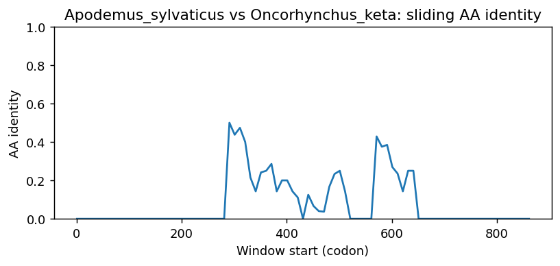
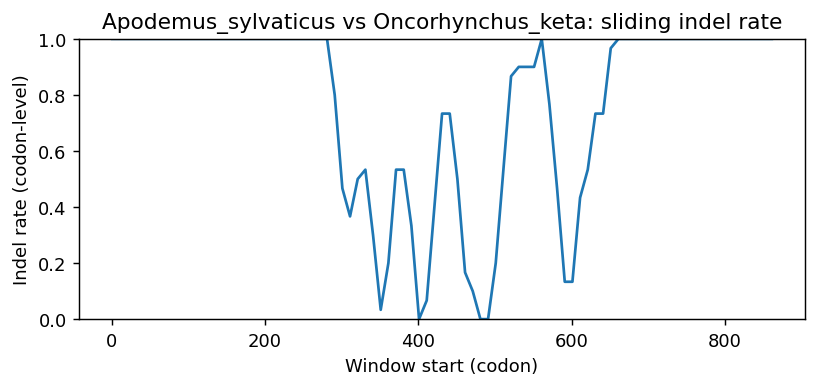
Apodemus_sylvaticus vs Carassius_carassius
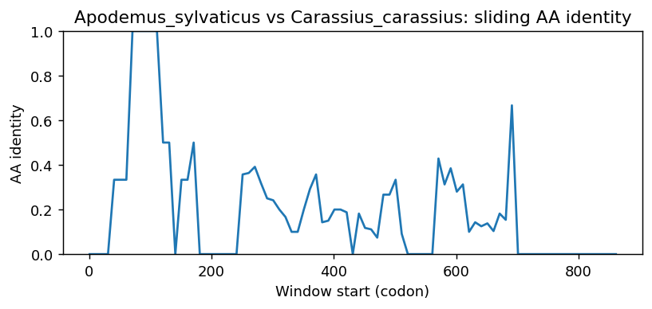
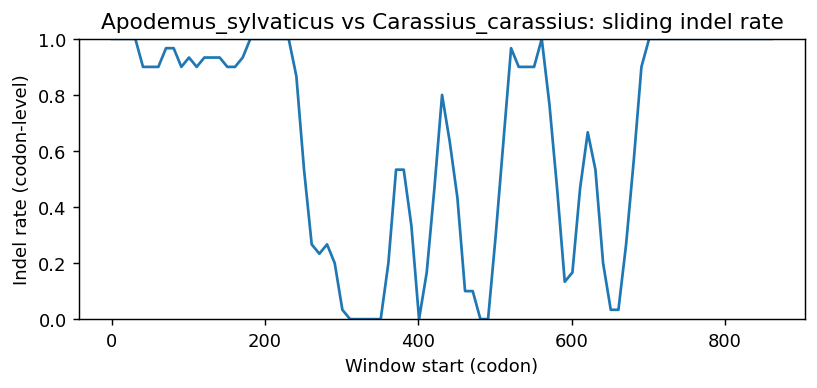
Apodemus_sylvaticus vs Sardina_pilchardus
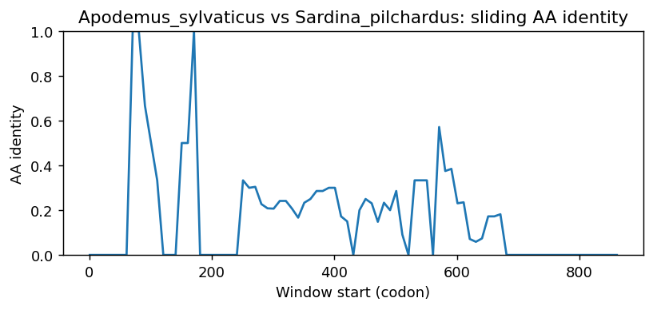
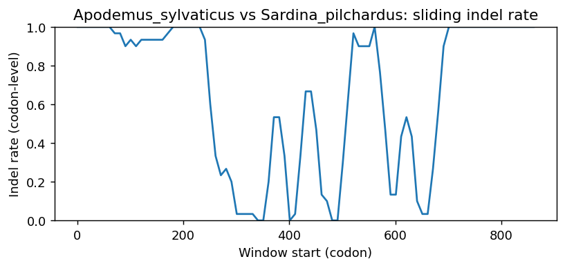
Apodemus_sylvaticus vs Xyrauchen_texanus
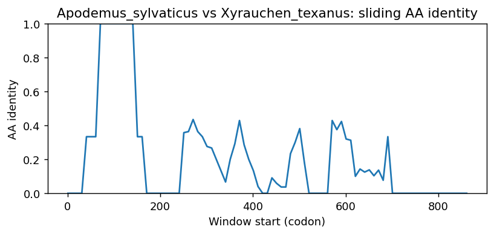
Apodemus_sylvaticus vs Electrophorus_electricus
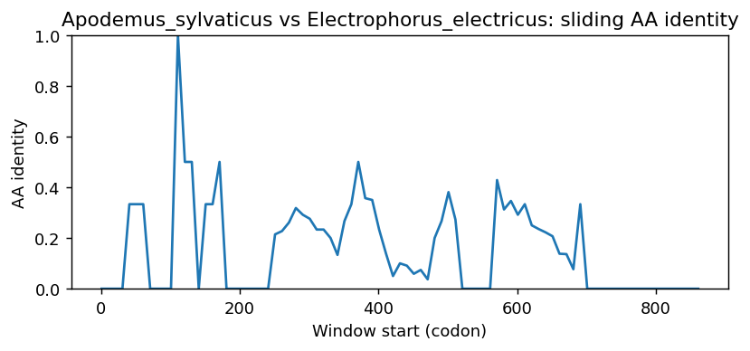
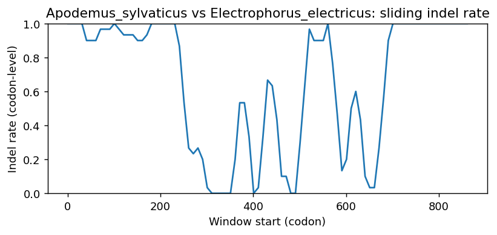
Apodemus_sylvaticus vs Clupea_harengus
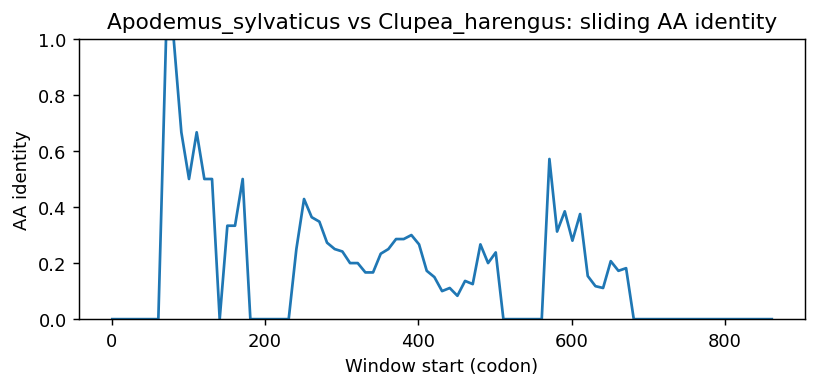
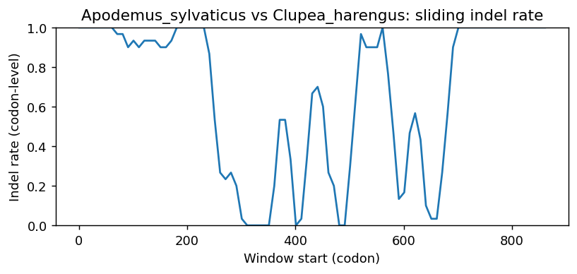
Methods (brief)
- CDS are translated (genetic code 1); proteins aligned by MAFFT when available, otherwise a progressive global aligner (BLOSUM62). Protein MSA is back-translated into a codon MSA.
- Pairwise metrics: AA/NT identities on aligned nongap positions; Ts/Tv; single-hit syn/nonsyn counts; gap events and largest contiguous gap cluster (codons); sliding-window AA identity and codon-level indel rate.
- Per-sequence diagnostics: GC content/skew, CpG density, AA low-complexity fraction via SEG-like entropy windows (win=12, H<2.2), and NT tandem repeats (homopolymers =5; di-nt =4 copies; tri-nt =3 copies).
- Correlations: Pearson/Spearman between AA identity and |GC difference|, mean AA LCR fraction, and mean NT repeat fraction across pairs.
- Risk classifier: combines identity, coverage, longest identical block, low-ID windows, max indel cluster, and up-ranks risk when mean LCR =0.25 or mean repeat =0.10 (soft-masking can remove seeds and reduce sensitivity).
Artifacts: pairwise_metrics.csv, per_sequence_composition.csv, correlations.csv, alignment_protein.faa, alignment_codon.fna.